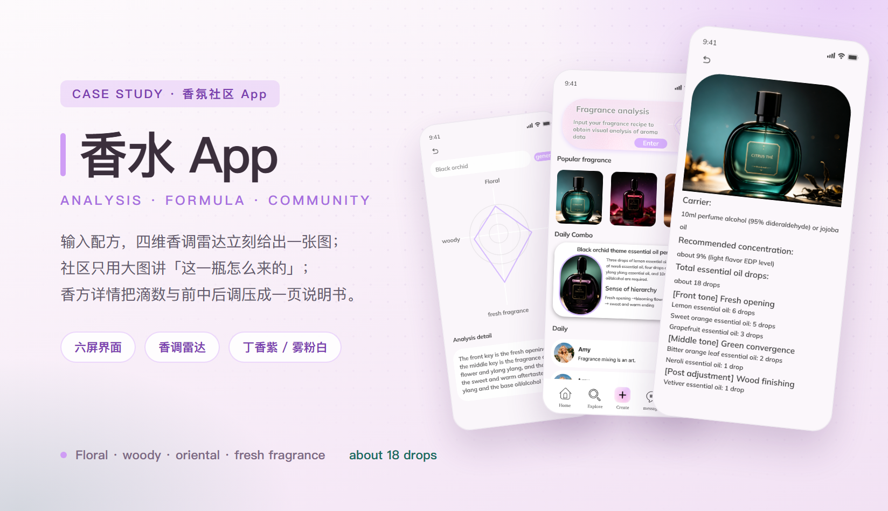
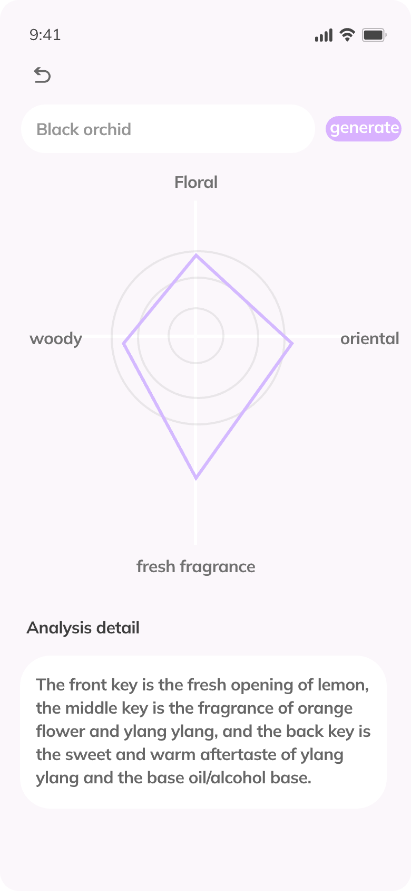
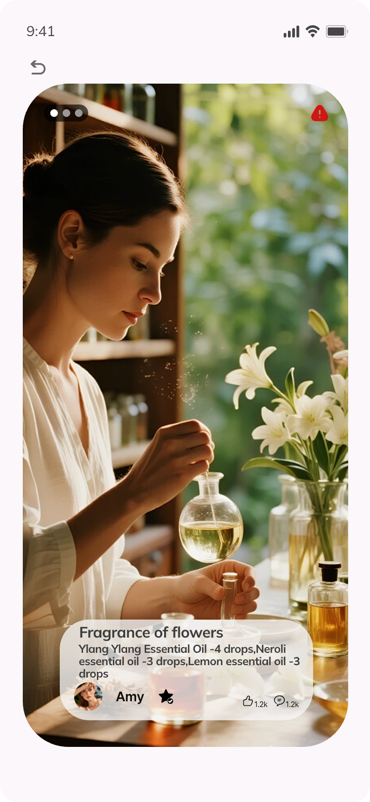
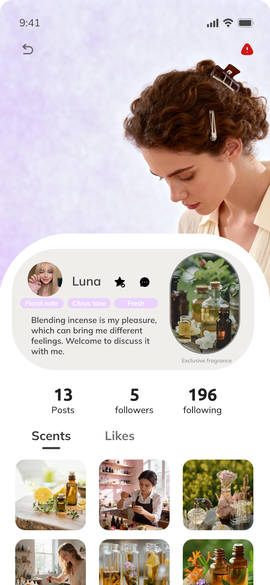
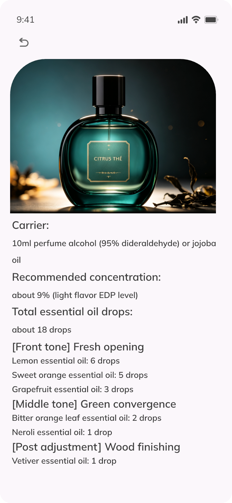

香水 App · 香调分析 / 香方社区
香水 App 最难讲的是「闻不到」。文字描述再准也隔一层，所以这次交付把看不见的气味全部换成能数的东西：一张四维雷达、一串滴数、一页香方。用户点开任何一瓶，看到的不是形容词，而是 Floral 打了多高、柠檬几滴、依兰几滴、总共 18 滴。
主视觉

项目背景
英文界面 · 香调分析 + 香方社区 · 六屏
这是一款面向英文用户的香氛社区 App：一端是「我有一份配方，想知道它闻起来是什么形状」，另一端是「我看到别人晒的一瓶，想照着调出来」。产品把这两件事绑在同一条链路上——输入配方拿到香调分析，看懂一瓶之后再把它存成自己的香方，最后发到 For You 里被别人复刻。
难点不在页面多少，而在翻译：气味没法拍照，也没法试听。所以整套界面只承认两种可数的东西——四轴雷达图（Floral / oriental / fresh fragrance / woody）与滴数（柠檬 6 滴、甜橙 5 滴……共 18 滴）。所有形容词都退到第二层，用来解释这两个数字，而不是替代它们。
设计策略
一屏只答一个问题 · 形状给直觉，滴数给操作
- 首页只走一条竖线：整条淡紫入口（Fragrance analysis）→ Popular fragrance 三瓶横滑 → Daily Combo 一张配方卡 → Daily 动态列表；从「我能做什么」读到「别人在做什么」，扫一眼不用回看。
- 主按钮只有一个：入口条里的 Enter 是整屏第一个实心胶囊，分析页顶部又把同一件事拆成输入框 + generate 两颗控件，前后一呼一应，用户不会在两个地方犹豫。
- 香调雷达只画四个方向 + 三层同心圆，不写百分比：形状本身就是结论（这一瓶偏花香与清新），再配一段 Analysis detail 把形状翻译成前中后调。
- 配方永远写成滴数：Daily Combo 是 3 + 3 + 4 滴 + 10ml 基底油，香方详情是 6 / 5 / 3 + 2 / 1 + 1 共 18 滴。能照着手做，比任何形容词都可信。
- 社区用整屏大图：For You 两张大图上下叠，文字只压底部一张磨砂卡（标题 + 配方一行 + 头像 + 1.2k 赞 / 1.2k 评论），照片负责情绪，卡负责信息。
- 个人主页把身份压成一行标签：Floral note / Citrus tone / Fresh 三颗淡紫胶囊紧贴名字，13 Posts / 5 followers / 196 following 用大字号并排；Scents / Likes 两栏切换，作品只看图。
部分界面截图
六屏 · 首页 / 分析 / 社区 / 作品详情 / 个人主页 / 香方
下面六屏全部来自交付稿：首页回答「这里能做什么」，分析页回答「这瓶闻起来是什么形状」，社区流回答「别人怎么调」，作品详情回答「这一瓶的完整配方」，个人主页回答「谁在调、调什么」，香方详情回答「照着做要几滴」。六屏共用一套淡紫胶囊、白卡与磨砂卡，切页时只有内容在变。
重点看两处：一是雷达图与滴数永远成对出现——形状给直觉，数字给操作；二是所有大图卡片底部的文字都压进同一个磨砂容器，照片再亮也不会吃掉一行配方。






视觉语言
雾粉白底 · 丁香紫交互色 · 深梅墨 · 精油绿
底色是雾粉白 #fdf7fa，丁香紫 #cf9df5 只用在「可点 / 可选 / 可读」三类元素上——Enter 与 generate、标签胶囊与选中态、雷达线与刻度；浅一档的 #f6ebfb 做成胶囊底与入口卡的渐变收尾。深梅墨 #3b2f3c 负责标题与正文层级，副文用 #7d7183。精油绿 #1d6b5f 取自瓶身液体，只出现在数字与提示（about 18 drops、about 9%，light flavor EDP level）上，一个绿字都不做装饰。整套色板里没有装饰色：每一颗都能在界面上指出它管什么，产品色全部交给照片里的绿瓶、酒红瓶与琥珀瓶。
遇到的问题与解决
4 个「闻不到 + 大图社区」带来的取舍
问题「气味」看不见，用户凭什么相信这份分析？
解决把气味拆成形状与滴数：雷达图给形状（Floral / oriental / woody / fresh 四个轴、三层刻度），Analysis detail 用一句话翻译成前中后调，香方详情再把每一滴写死（柠檬 6 滴、甜橙 5 滴、葡萄柚 3 滴……共 18 滴）。形状负责「一眼判断」，数字负责「照着做」，两者缺一都不可信。
问题首页要同时放入口、现货、配方、动态四件事，怎么不打架？
解决按「我能做什么 → 别人在做什么」排成竖向三段，每段换一种容器：入口条是淡紫渐变的整条横卡（唯一实心按钮 Enter），Popular fragrance 是三瓶横滑、右侧半张暗示可滑，Daily Combo 是一张带圆环产品图的白卡，Daily 是纯列表。容器形状不同，扫读时自然分层。
问题整屏大图 + 配方文字，怎么保证字一定读得清？
解决文字一律压在底部半透明磨砂卡上，卡内三行结构固定：标题 → 配方一行 → 头像与点赞评论。卡片左右留 20px、距底部 24px，图片再亮也吃不掉文字对比度；作品详情把同一张卡放大到全屏，结构完全不动。
问题淡紫色铺得不少，会不会显廉价？
解决丁香紫只出现在三类元素：可点的（Enter / generate / 创建按钮）、可选的（标签胶囊 / For You 选中态）、可读的（雷达线与刻度）。大面积底色始终是雾粉白，产品颜色交给照片里的绿瓶、酒红瓶与琥珀瓶——紫色退成「交互色」，就不抢产品。
设计顺序
先解「闻不到」，再定容器，最后做社区
-
先解「闻不到」
把气味翻译成两种可数的东西——四轴雷达与滴数。先写分析页与 Analysis detail 的文案结构，再回头做首页，避免首页做成空壳入口。
-
再定一屏一个主容器
首页四段各用一种容器（横卡 / 横滑 / 圆环白卡 / 列表），颜色只落在可点元素上，保证整屏注意力优先级唯一。
-
最后做社区与主页
For You、作品详情、个人主页全部以照片为主体，文字统一压进磨砂卡；Scents / Likes 保持三列等宽，换人不变形。
交付摘要
六屏 · 四个香调维度 · 一份 18 滴香方